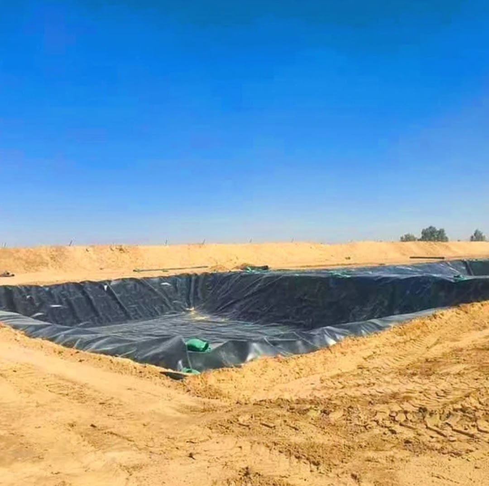
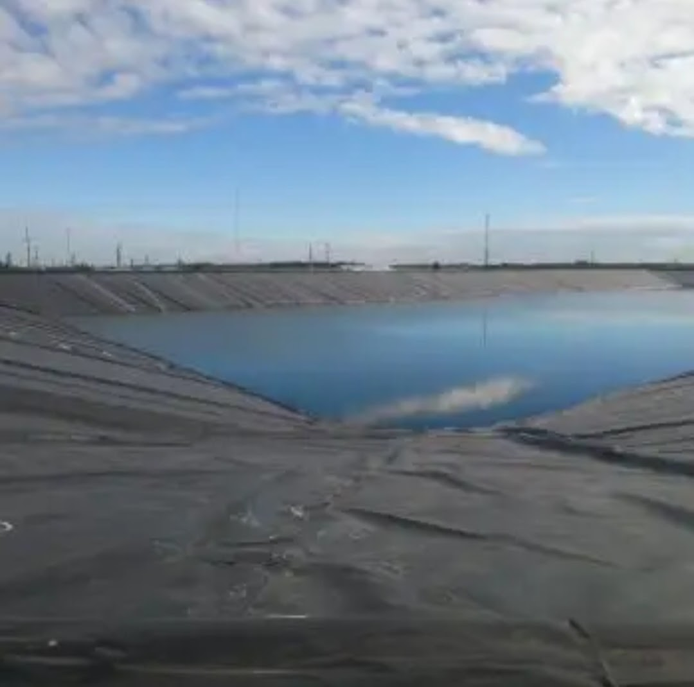
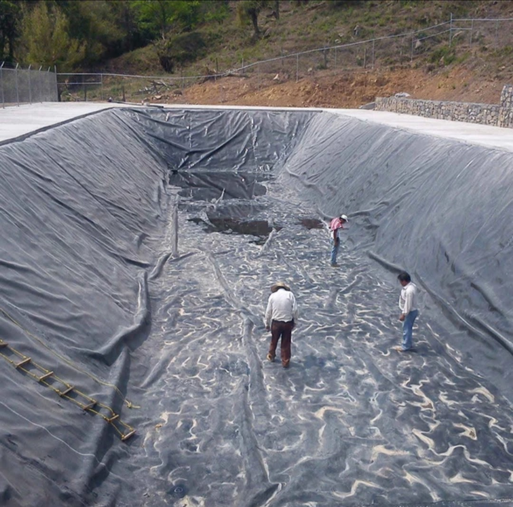
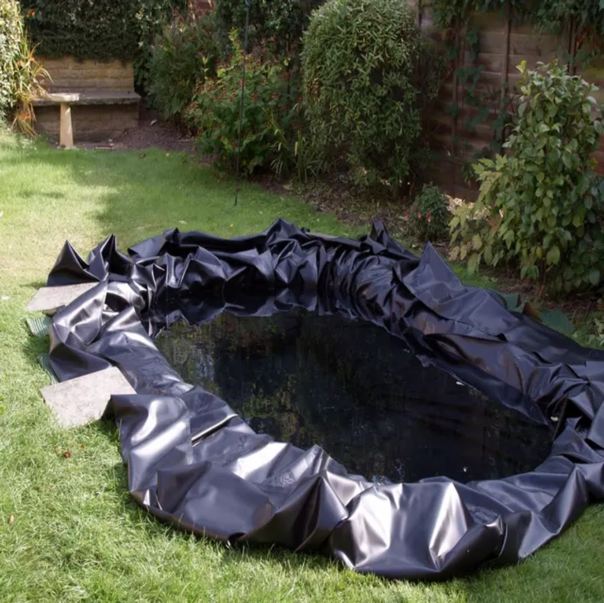
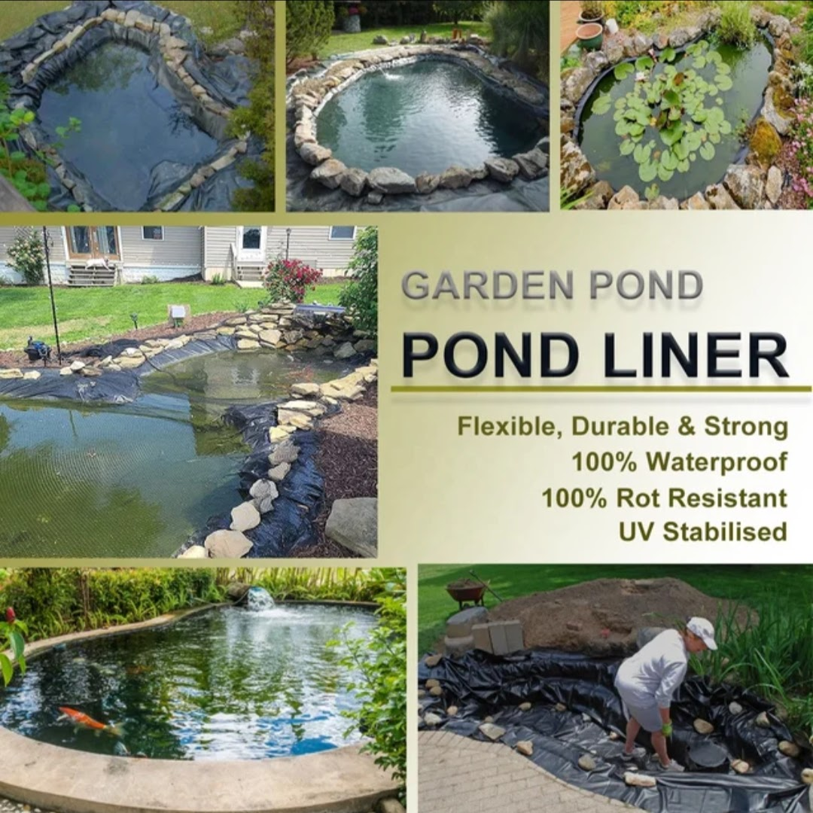

Heavy-duty geomembrane tarpaulin sheets designed for waterproofing, lining, and containment in demanding environments.






Geo Membrane Tarpaulins are engineered sheets used for water containment, lining, and seepage control in agricultural, construction, and industrial applications.
Manufactured from high-quality polymer materials, these tarpaulins provide excellent resistance to water, chemicals, UV exposure, and environmental stress, ensuring long-term performance.
For Indian conditions, correct thickness selection is critical based on pond size, soil condition, and expected load. Proper ground preparation and edge anchoring significantly improve service life and prevent liner damage.